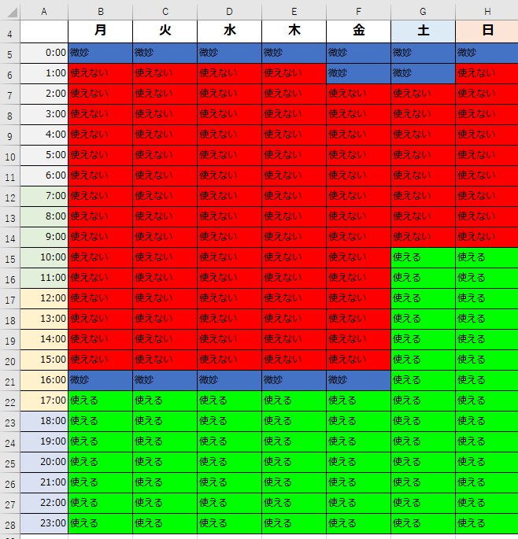

❌合成音声の録音→公開
❌botに対しスパム等をしないでね
⭕読み上げの声が1種類から3種類になりました！m.cvoice {0から2までの数字}を打つことで自由に声が変えれます。しかしまだエラー等はあると思います。
2022年2月11日にリリース開始のため歴が浅くデバッグも進んでいません。
導入させていただいたサーバーには確認として入らせて頂く場合があります。
このbotは機能上、管理者権限を与えているので心配な方は導入をご検討ください。
使用できる時間も運営がpcをつけている時間のみしか使えないため平日の昼間や深夜から早朝にかけてはつかえません。（下の画像を参照）

❌2022/3/8午後からコードが書き終わるまでbotは使用できません。アップデートしています。